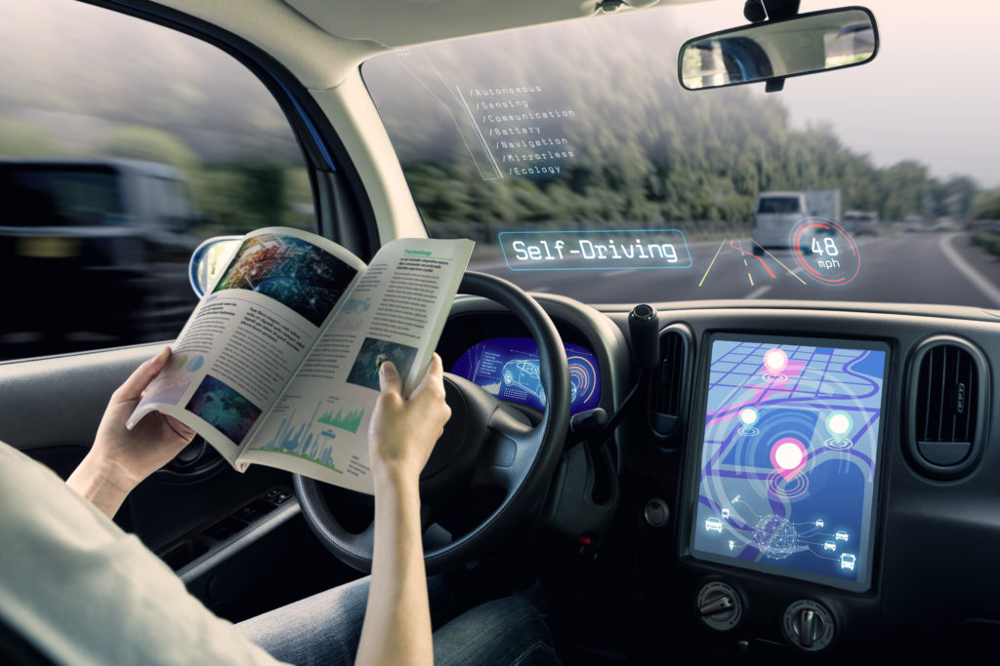

Self Driving Cars
Pros-:
Social benefit – lives saved
By removing manual driving controls from humans, autonomous vehicles would eradicate all fatalities involving human error.
Quicker commute times
With autonomous cars able to sense other cars around them and communicate with them, bumper to bumper traffic jams should be a thing of the past.
Environment, air quality, fuels/electric cars
Many of the companies looking to implement driverless cars are doing so with the aim to use electric vehicles rather than hybrid or regular vehicles with combustion engines.
Automation in daily life
Pros-:
Efficiency
This is among the major benefits of automation. Implementing automated processes within a business can eliminate the most time-consuming, repetitive tasks
Reliability and Consistent Output
Automating tasks that typically require significant manual input can eliminate the probability of human error. With automation, businesses can expect precise and consistent outputs.
Increased Safety
Automation removes the risks associated with many dangerous jobs, such as lifting heavy weights and working with dangerous chemicals.